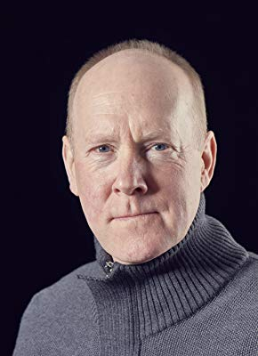
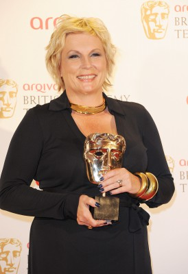
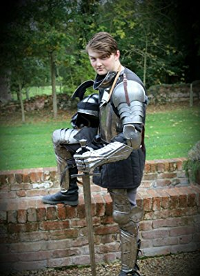
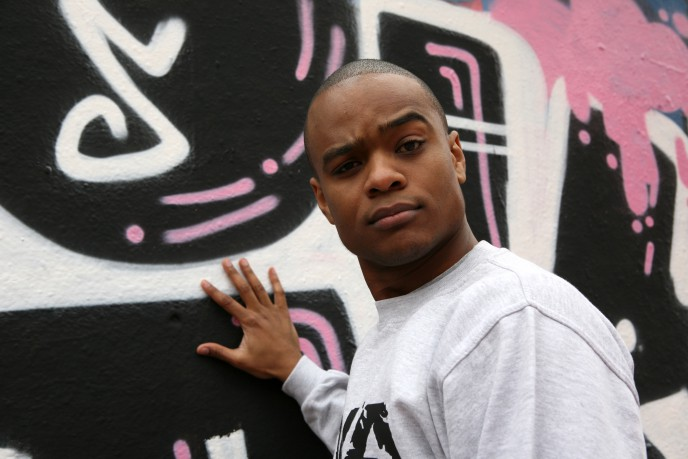

#11980 Ein Mops zum Verlieben
Alternativ: Patrick (Englischer Titel)

 IMDB-Wertung: 5.8 / 10
IMDB-Wertung: 5.8 / 10  Tomatometer: 90
Tomatometer: 90  Metascore: 28
Metascore: 28 
Sarah (B. Edmondson) kann sich vor Verpflichtungen kaum noch retten. Ihr neuer Job als Lehrerin und ein Charity-Lauf stehen als nächstes auf dem Programm und wollen beide vorbereitet werden. Als wenn das nicht schon aufregend und anstrengend genug wäre, wird sie auch noch von ihrem Freund verlassen. Hinzu kommt ein Erbe mit neuen Aufgaben, denn ihre verstorbene Großmutter hat ihr einen Mops hinterlassen, um den sie sich nun auch noch kümmern muss. Das verwöhnte Tier hat keine Manieren. Der Mops frisst kein Hundefutter, schnarcht und kämpft um Aufmerksamkeit. Jeder Umerziehungsversuch scheitert, doch eines Tages lernt sie dank ihres neuen vierbeinigen Mitbewohners die Liebe ihres Lebens kennen...
Jahr: 2018
Dauer: 94 Minuten
FSK: 6
Land: England Studio: Alive Vertrieb und MarketingTonspuren: DTS - ,
Untertitel:
Auflösung: 1080p (1920x808) Größe: 6051 MB
Genre: Komödie, Familie, Liebe
Regisseur: Mandie Fletcher
Drehbuch: Vanessa Davies, Vanessa Davies, Paul de Vos, Mandie Fletcher
Soundtrack: Michael Price
Darsteller:
- Beattie Edmondson als Sarah Francis
-  Rupert Holliday-Evans als Roger the Landlord
 Ann Queensberry als Granny
Ann Queensberry als Granny- Kasia Koleczek als Saskia the Parkgoer
- Peter Davison als Alan
- Cherie Lunghi als Rosemary
- Rosie Ede als Shop Assistant
 Gemma Jones als Celia
Gemma Jones als Celia Ed Skrein als Oliver
Ed Skrein als Oliver- Ali Barouti als Tariq
- McKell David als Mikey
- Scott Chambers als Spike
- Emilia Jones als Vikki
 Meera Syal als Head Teacher Phillips
Meera Syal als Head Teacher Phillips Adrian Scarborough als Mr. Peters
Adrian Scarborough als Mr. Peters-  Jennifer Saunders als Maureen
- Emily Atack als Becky
 Tom Bennett als Ben
Tom Bennett als Ben- Roy Hudd als Eric the Caretaker
 Bernard Cribbins als Albert
Bernard Cribbins als Albert- Milanka Brooks als Suzanne
- Anouar H. Smaine als Peters
- Mathieu Szymkowiak als Oliver
- Maria Barr als Jogger / Angry Park Visitor (uncredited)
- Michael Chapman als Parent (uncredited)
 Susan Fordham als Parent (uncredited)
Susan Fordham als Parent (uncredited)- Clair Gleave als Dancer (uncredited)
-  Zak Holland als Student / Jogger (uncredited)
- Gurnita Kaur Kahlon als Teacher (uncredited)
 Martyn Mayger als Fisherman (uncredited)
Martyn Mayger als Fisherman (uncredited) Elena Valdameri als Park Emergency Call Lady (uncredited)
Elena Valdameri als Park Emergency Call Lady (uncredited)- Sam Fletcher als Harry
-  Jason Lewis als Geoff the Parkgoer
- Patricia Potter als Caroline
- Ben Roddy als Graham
- Archie Barnes als Zachary
- Meadow Nobrega als Nadia
- Denese Ricketts als Carly
- Olivia Buckland als Vet's Receptionist
- Yurj Buzzi als Waiter
- Harley als Patrick the Pug
- Gintare Beinoraviciute als Jogger (uncredited)
- Paul Blackwell als Runner in Park (uncredited)
 Pamela Betsy Cooper als Dog Walker (uncredited)
Pamela Betsy Cooper als Dog Walker (uncredited)- Jack Jenkins als Bar Man (uncredited)
- Ashley Lawrence als Jogger (uncredited)
- Andrew G. Ogleby als Teacher (uncredited)
- Andrew Reed als Dog Walker (uncredited)
- Jason Shillingford als Fun Runner (uncredited)
- Richard Stanley als Passerby / Diner (uncredited)
Datei: X:\2018(G-M)\Mops zum Verlieben, Ein (2018, FSK6, 1920x808).mkv seit 01.11.2019
Festplatte: HD 2018(G-Z)-2019(A-Z)
 Es gibt insgesamt 138 Filme in der Gruppe '2018(G-M)'
Es gibt insgesamt 138 Filme in der Gruppe '2018(G-M)'